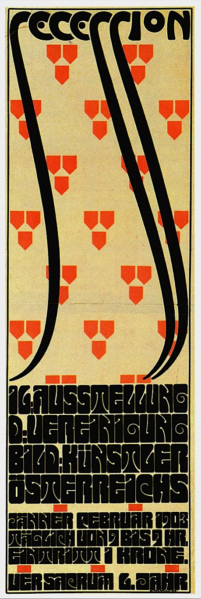

References / Poster / 307
Poster for the 16th Secession exhibition
Alfred Roller’s poster of 1903 packs heavy, rounded capitals into a solid block under a field of repeated three-part emblems.
- Source
- Leopold Museum Online Collection: Poster for the 16th Exhibition at the Vienna Secession, Inv. 3027
- Creator
- Alfred Roller
- Made
- 1902/03 (signed and dated 1903 on the stone)
- Style
- Vienna Secession (agent-proposed, not yet reviewed by a person)
- Moods
- Bold, geometric, dense
- Evidence
- Inspected the Leopold Museum photograph of its copy, Inv. 3027 (992 × 3017 px), which is not open for download. The stored image is a smaller Commons scan from a printed reproduction (459 × 1359 px); its red is more saturated than the salmon red of the Leopold copy.
- Reviewed
- Rights
- Open license, stored. License: public domain. Rights policy
Context
The Leopold Museum records the poster as designed by Alfred Roller and printed in colour lithography by Albert Berger, Vienna, 1902/03, 95 × 31.4 cm, signed and dated “ALFRED ROLLER.1903” on the stone. Its text says Roller combined simplifying flat stylization with a high degree of ornamental abstraction, and that distorted lettering was typical of Viennese posters around 1900. Leopold Museum Inv. 3027.
Alfred Roller (1864–1935) was an Austrian painter, graphic designer, and set designer, and a member of the Vienna Secession. Wikipedia: Alfred Roller.
Observed
- The poster is tall and narrow, on cream paper inside a thin black frame.
- “SECESSION” runs across the top in black letters; the descending strokes of its S letters continue as three long black curves that sweep down through most of the height.
- Behind the curves, a regular grid of red emblems repeats: each emblem is three small shield or pentagon shapes, two above and one below.
- The lower third is a dense block of heavy, rounded black capitals: “16. AUSSTELLUNG / D. VEREINIGUNG / BILD. KÜNSTLER / ÖSTERREICHS”, then three lines with the months “JÄNNER FEBRUAR 1903”, the daily opening hours, and “EINTRITT 1 KRONE”, and “VER SACRUM 6. JAHR”.
- The letters are packed with almost no space between them and are stretched so that each line is full width; spirals fill the ends of short lines.
- Small red rectangles mark the divisions between the text blocks.
Why it belongs
Roller turns the text into a texture: the lettering block reads first as a black field and only then as words. It is the strongest example of the style’s tight, block-filling capitals.
The three-part emblem repeats the Secession habit of grouping three small squares or shields as a mark.
Borrow
Set a short, important text block in heavy capitals with minimal spacing so it reads as one black shape.
Repeat a small three-part emblem on a regular grid as a quiet background pattern in one accent colour.
Measured
Machine-extracted by tools/image-traits.py on . Full measurement.
- Mean chroma
- 0.22
- Palette
- #ddc483 32%
- #080808 27%
- #eeeeec 7%
- #e73d0f 6%
- #e3d28f 4%
- #2a271c 3%
- #3a3627 3%
- #1d1b13 2%

